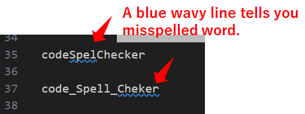
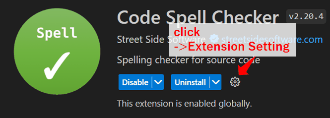
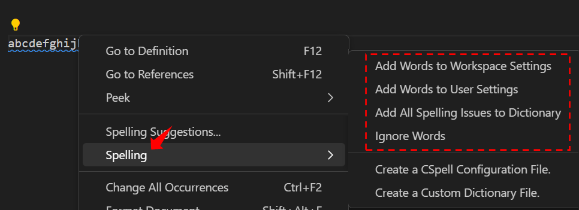

2023/05/12
Using the VSCode extension "Code Spell Checker"
If you install Code Spell Checker, it will check spelling in real-time and highlight typos with wavy underlines.
- It points out spelling errors with a wavy line and displays possible correct answers.
- Spell check rules can be customized.
- CamelCase (testWord) and SnakeCase (test_word) are supported.
- Hungarian notation (testword) is also supported if configured.
- Extension packs for languages other than English are also available.
Code Spell Checker - Visual Studio Marketplace
Extension for Visual Studio Code - Spelling checker for source code
How to use
You just install it, and it will notify you of spelling mistakes with wavy underlines.
Spelling mistakes are also displayed in the Problems tab.

Moreover, Code Spell Checker provides suggestions for correct alternatives.
You can place the cursor on the misspelled word, then click on 'Quick Fix' or the lightbulb icon to view the suggested corrections.
Setting up spell-checking rules
Here is how to set up check rules for your own use or share them with your team.
using the settings file
There are 3 configuration files for Code Spell Checker.
The numbers below indicate the priority order.
- Creating a 'cspell.json' file in the Workspace Folder and configuring it.
- Configuring it through VSCode's Workspace Settings.
- Configuring it through VSCode's User Settings.
For option 1, you create the file manually.
For options 2 and 3, you can edit the files directly or use VSCode's settings interface.
Creating cspell.json
You can write the following in a JSON file format.
The following is a list of items that may be used frequently.
| Setting | Description |
|---|---|
| words zzzzz | Registers 'zzzzz' as a dictionary word and includes it in the suggestions for corrections |
| ignoreWords zzzzz | Excludes 'zzzzz' from spell checking |
| flagWords zzzzz | Forces 'zzzzz' to be considered an error |
| allowCompoundWords | Enables support for Hungarian notation (words written in Hungarian notation like 'spellcheck' would normally be flagged as errors but will not be flagged when this setting is enabled) |
| ignorePaths | Specifies file paths to be excluded from spell checking |
| maxNumberOfProblems | Specifies the maximum number of spelling mistakes to display |
| minWordLength | Specifies the minimum number of alphabets for spell checking English words, The default value is 4 |
For example, you can use it as follows:
{
"words": [
"aiueo"
],
"ignoreWords": [
"testword"
],
"flagWords": [
"spellCheck"
],
"allowCompoundWords": true,
"ignorePaths": [
"xxxxxx/**"
],
"maxNumberOfProblems": 4,
"minWordLength": 7
}
For other settings, please refer to the following:
CSpell Configuration
Customizing CSpell - CSpell’s behavior can be controlled through a config file.
Setting from the settings page
In the extension settings page within VSCode, you can configure settings for both Workspace Settings and User Settings.
You can configure the same settings that can be set in the cspell.json file through the VSCode settings.
There are a total of 59 items available.
Settings from the right-click menu
You can right-click on a flagged word and then choose the option to add the word to the dictionary.
- Add Words to WorkSpace Settings / User Settings：
This option allows you to register the selected word in the WorkSpace or User's Settings.json file. - Add All Spelling Issues to Dictionary：
This option registers all flagged words as errors in the WorkSpace's Settings.json file. - Ignore Words：
This option adds the selected word to the ignore list in the WorkSpace or User's Settings.json file.
You can also use shortcuts to perform these actions:
- Mac: ⌘+. or Cmd+.
- Windows: Ctrl+.
Settings within your code
By commenting out the line 'cSpell: xxxxx' within your code, you can configure specific rules.
Replace 'xxxxx' with the following settings:
| setting | description |
|---|---|
| disable | Turns off spell checking functionality after this line |
| enable | Turns on spell checking functionality after this line, Used in conjunction with 'disable' |
| disable-next-line | Turns off spell checking functionality for the next line only |
| ignore zzzzz | Excludes 'zzzzz' from spell checking |
| flag zzzzz | Forces 'zzzzz' to be considered an error |
| words zzzzz | Registers 'zzzzz' as a dictionary word and includes it in the suggestions for corrections |
| enableCompoundWords | Enables support for Hungarian notation |
For example, you can use it as follows
/* cSpell:disable */
spell chek ←This will not be checked
/* cSpell:enable */